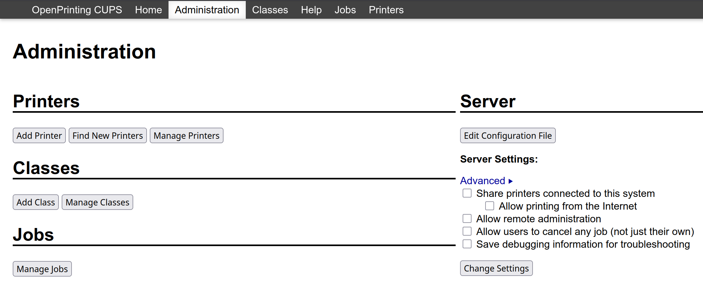
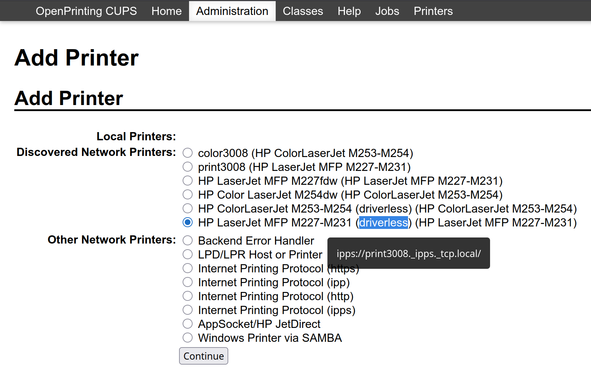

archlinux系统gnome桌面cups配置打印机
之前有几个可以看一下，这次主要说的是怎么使用cups直接添加打印机，支持无驱动安装（唯一的问题是，多份打印时，或出现一直打印不停止，必须手动停止）
配置以后的效果，竟然可以显示墨水余量（我这个是gnome48）

打印机后台配置
首先通过 局域网与打印机配置 使得自己的电脑A和打印机B处于同一个局域网下，然后，在这个电脑A的浏览器里访问打印机B的ip地址，我这里是 http://192.168.31.2/
然后点击如下图，设置 主机名称: 和 Bonjour 服务名称:，我这里设置的是 print3008

有可能需要重启打印机
电脑软件安装与网络配置
我的archlinux系统，需要安装
1 | sudo pacman -Ss cups avahi nss-mdns |
必须配置 .local 域名的解析，编辑
1 | sudo vim /etc/nsswitch.conf |
前面加上 # 注释掉这一行，并添加
1 | #hosts: mymachines resolve [!UNAVAIL=return] files myhostname dns |
开启服务
1 | sudo systemctl enable --now avahi-daemon |
检查是否找到打印机
1 | driverless | grep ipp |
略微等待可看到（其中 print3008 是之前网页中的设置）
1 | ipps://print3008._ipps._tcp.local/ |
说明打印机配置正确，另确定是否可以解析 .local（其中 print3008 是之前网页中的设置）
1 | ping print3008.local |
如果没问题，一切正常
cups添加打印机
访问 http://localhost:631/admin 可能需要所如电脑解锁密码，点击 add printer，然后选中
注意第二个图，必须是鼠标包含
driverless的选项，并且鼠标放在旁边显示ipps://print3008._ipps._tcp.local/（其中print3008是之前网页中的设置）
| 1 | 2 |
|---|---|
|  |  |
剩下全部继续，无需额外设置
唯一的问题是，多份打印时，或出现一直打印不停止，必须手动停止
但是 gnome里的这个页面我很喜欢
本文作者：yuhldr
本文地址： https://yuhldr.github.io/posts/a60a48cc.html
版权声明：转载请注明出处！